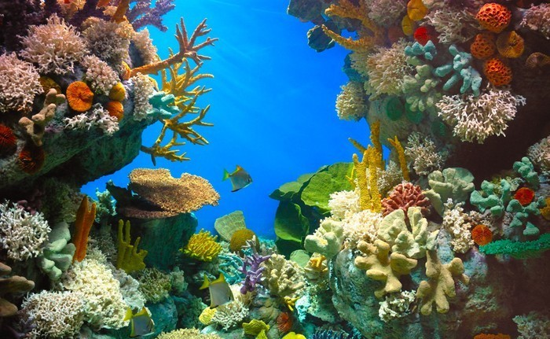
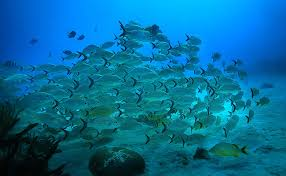

Inicio
1.Vida Marina
2.¿Que estudia la vida marina?
3.Biologia
4.Ramas de la biologia
5.Ecologia
6.Ramas de la ecologia
7.Oceanografia
8.Ramas de la oceanografia
9.Curiosidades de la vida marina
10.Estadisticas de la vida marina
salir
comenzar
Ir al inicio del articulo

Ramas de la ecología
Ir al inicio del articulo
biogeografía
el estudio de las distribuciones geográficas de las especies
ecología de la conservación
que estudia cómo reducir el riesgo de extinción de las especies
sucesión ecológica
que se centra en comprender el cambio dirigido de la vegetación
ecología evolutiva o ecoevolución
que estudia los cambios evolutivos en el contexto de las poblaciones y comunidades en las que existen los organismos
ecología funcional
el estudio de los roles o funciones que ciertas especies (o grupos de ellas) desempeñan en un ecosistema
ecología marina y ecología acuática
donde el medio ambiental dominante es el agua
ecología microbiana
la ecología de los microorganismos
paleoecología
que busca comprender las relaciones entre las especies en conjuntos fósiles
ecología del suelo
ecología de la pedosfera
ecología urbana
el estudio de los ecosistemas en áreas urbanas

Campos interdisciplinarios
diseño ecológico e ingeniería ecológica
economía ecológica
ecología festiva
ecología humana y antropología ecológica
ecología social, salud ecológica y psicología ambiental